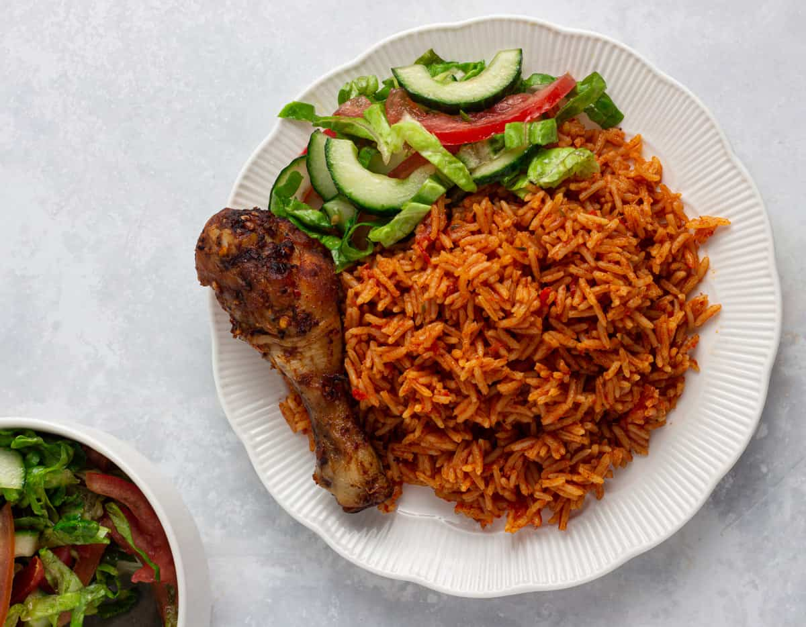

Jollof Rice

This recipe makes about 3 servings of the meal.
Ingredients
- 3 cups long grain parboiled rice.
- 1/8 cup of vegetable or sunflower oil.
- 400g canned or packaged tomato.
- 11/2 large or 3 medium sized onions.
- 4 large red paprika.
- 2 scotch bonnet pepper (or some other hot pepper).
- 2 cups of chicken or beef broth.
- 2 garlic cloves.
- 1 tablespoon ginger paste.
- 2 tablespoons curry powder.
- 1 tablespoon dried thyme leaves.
- 1 tablespoon smoked paprika.
Return Home